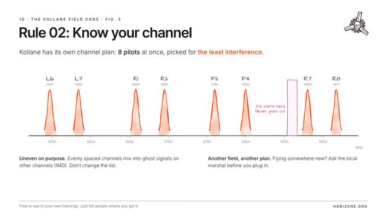
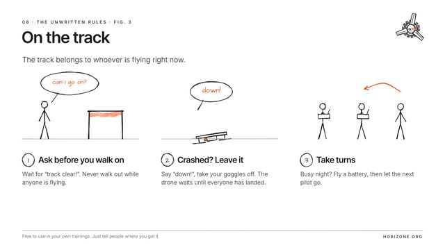

The path
In the order a first season goes. Jump in anywhere.
1
Start here
After this you can tell drones apart, stay safe and know the rules.

2
Flying
After this you can predict what the drone does, fly a line and start on tricks.
3
Video and RF
After this you can see clearly, keep a clean link and never wreck anyone’s video.
4
Building and fixing
After this you can build a 5″, keep it flying and find what is broken.
5
Flying together
After this you know the rules, written and unwritten.

Lesson 5.2 · #10The Kollane field codeOwn your channel. Look after each other.10 min · 10 slides▶
Lesson 5.3 · #08The unwritten rulesFly so that everyone else can fly too.10 min · 10 slides▶6
Drone sport
After this you can race, know the formats and find your way to DRTE.
7
Licences and exams
After this you know where you may fly and how to get each test, registration and licence. The processes, not the exam material.
Nothing found.